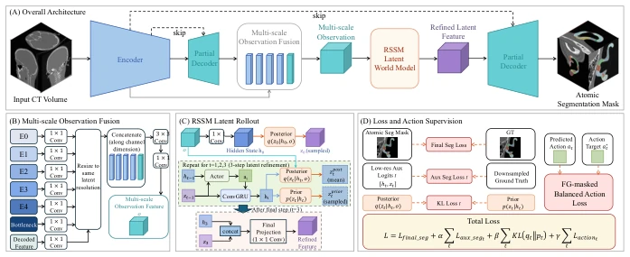
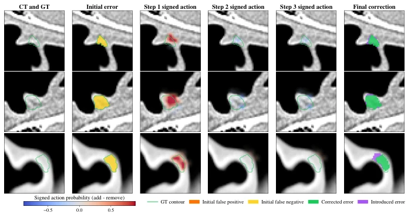
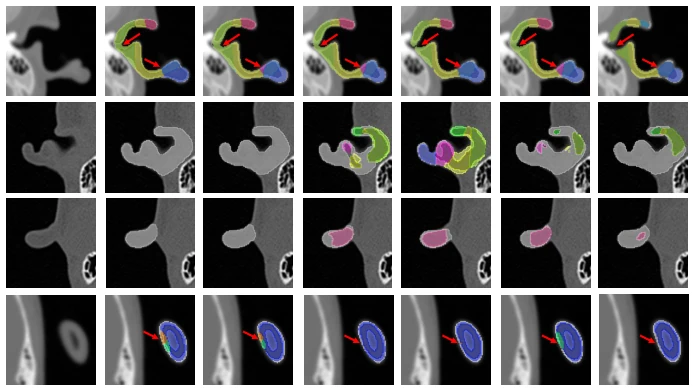
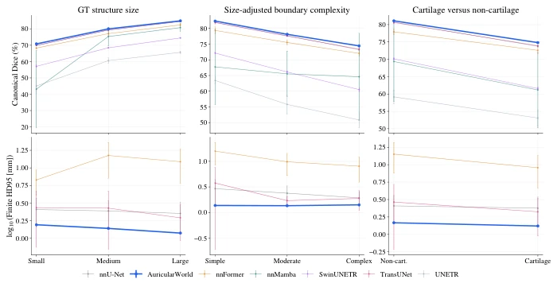
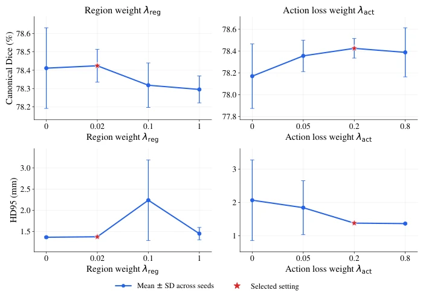

这篇论文把 World Model 硬塞进医学分割里，算是给 nnU-Net 加了个“脑回路”。虽然标题听着像具身智能，但本质还是 CT 图像分割，所谓的“动作”不过是潜空间里的解剖结构加减，离真正的机器人决策差得远。HD95 降低 43% 确实亮眼，但医学上这精度提升是否临床显著存疑。把前向网络改成 RNN 推理，计算成本增加，却只为了解决耳部这种小目标分割，有点“杀鸡用牛刀”的嫌疑。不过，在标签嵌套、边界模糊的极端场景下，这种迭代推理机制确实比单步预测更稳健，算是给医学分割领域开了个新脑洞，只是不知道临床医生愿不愿意等这多出来的推理时间，毕竟医疗场景对实时性要求极高。
This paper forcibly embeds the World Model into medical segmentation, effectively adding a "brain circuit" to nnU-Net. Although the title sounds like embodied intelligence, the essence remains CT image segmentation; the so-called "actions" are merely additions and subtractions of anatomical structures in the latent space, far from true robot decision-making. The 43% reduction in HD95 is indeed impressive, but whether this accuracy improvement is clinically significant in medicine is questionable. Changing the feed-forward network to RNN inference increases computational cost, yet it is only to solve small-target segmentation like the ear, raising suspicions of "using a cannon to kill a chicken." However, under extreme scenarios such as nested labels and blurred boundaries, this iterative reasoning mechanism is indeed more robust than single-step prediction, offering a new perspective for the medical segmentation field. It is just unknown whether clinicians are willing to wait for this extra inference time, after all, medical scenarios have extremely high requirements for real-time performance.
Fine structure segmentation of the ear is extremely challenging in CT, where the small proportion of the ear region leads to severe foreground-background imbalance, and cartilage boundaries are irregular with weak contrast [4]. More troublesome is that clinical annotations have nested relationships, such as substructures covered by skin overlapping with pure cartilage regions, forming natural overlapping labels. Existing mainstream methods like nnU-Net [6] and TransUNet [14] are all based on feed-forward propagation, where images are directly mapped to segmentation masks; intermediate representations only optimize voxel prediction, lacking explicit modeling of how anatomical hypotheses evolve. Although Transformers and State Space Models have improved global context [15][16], they have not yet solved the iterative reasoning problem. For such tasks with tightly coupled structures, relying solely on single-step prediction makes it difficult to guarantee anatomical consistency, urgently needing the introduction of a mechanism capable of gradually correcting anatomical hypotheses. This is also the core motivation for this paper proposing the World Model segmentation framework.
方法Method
AuricularWorld 基于 nnU-Net 架构，在中间解码层插入递归潜世界模型。首先通过多尺度观测融合模块整合编码器特征与部分解码特征，构建解剖观测。随后进入 RSSM 潜空间，进行三步动作引导的潜状态 rollout。动作定义为解剖结构的“添加”与“移除”，由 Actor 网络预测。训练时，利用前景掩码平衡的动作目标监督潜状态转移，解决前景稀疏和类别不平衡问题。最终潜状态投影回高分辨率解码器，结合跳跃连接生成最终分割。该设计在特征空间进行迭代，而非直接操作掩码，既保留了边界定位能力，又实现了结构演化。损失函数包含最终分割损失、辅助分割损失、KL 散度及动作监督损失，共同优化潜动态，确保推理过程稳定且符合解剖逻辑。
AuricularWorld is based on the nnU-Net architecture, with a recursive latent world model inserted into the intermediate decoder layer. First, a multi-scale observation fusion module integrates encoder features and partial decoder features to construct anatomical observations. Subsequently, it enters the RSSM latent space to perform a three-step action-guided latent state rollout. Actions are defined as the "addition" and "removal" of anatomical structures, predicted by the Actor network. During training, foreground mask-balanced action targets supervise latent state transitions, solving foreground sparsity and class imbalance problems. Finally, the latent state is projected back to the high-resolution decoder, combined with skip connections to generate the final segmentation. This design iterates in feature space rather than directly manipulating masks, preserving boundary localization capabilities while achieving structural evolution. The loss function includes final segmentation loss, auxiliary segmentation loss, KL divergence, and action supervision loss, jointly optimizing latent dynamics to ensure the inference process is stable and conforms to anatomical logic.

Figure 1: Overview of the proposed AuricularWorld framework. (A) Overall architecture. The input 3D

Figure 4: Visualization of the three-step RSSM action-guided refinement process. Each row shows one
The dataset includes 193 patients and 198 annotated ears, covering skin-covered substructures and cartilage. Comparison baselines include nnU-Net, TransUNet, SwinUNETR, etc. Evaluation metrics are Dice and HD95. Results show AuricularWorld achieved the best Dice in 31 out of 35 standard structures, with HD95 reduced to 1.379mm, a relative reduction of 43.2% compared to nnU-Net. Ablation studies indicate multi-scale RSSM is the main contribution, balanced action weights improve volume overlap, and foreground mask supervision further improves boundary accuracy. Qualitative results also show this method has clearer boundaries on small, adjacent structures, reducing fragmentation. Overall, it validates the effectiveness of latent world model reasoning in difficult medical segmentation tasks, providing a new idea for complex anatomical structure segmentation.

Figure 2: Qualitative comparison on representative test cases. Columns show the input CT, ground truth, and

Figure 3: Category-wise comparison of AuricularWorld and external segmentation methods on test set. The

Figure 5: Sensitivity of AuricularWorld to the region weighting coefficient λreg and action supervision coef-